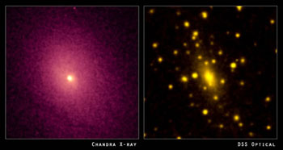

Credit: NASA/CXC/UCI/A.Lewis et al. Optical: Pal.Obs. DSS
The intra-cluster medium is the tenuous X-ray emitting gas that exists between galaxies in the cluster environment. Despite its extremely low density, it is estimated that in large clusters, the intra-cluster medium may contain more baryonic material than all of the galaxies put together. However, this constitutes only a small fraction of the mass of the cluster, the majority of which is made up of dark matter.
The extreme temperature of the intra-cluster medium (tens of millions of Kelvin) initially came as a surprise to astronomers who had previously assumed that gas within clusters should have cooled down long ago to form more galaxies. It is now believed that the supermassive black holes that lurk at the centres of many galaxies are responsible for maintaining the high temperature of the intra-cluster medium. As the hot, X-ray emitting gas cools, it falls towards the cluster centre and is accreted by the central black holes of active galaxies. This process releases vast quantities of energy in collimated galactic jets that reach beyond the galaxies themselves and into the intra-cluster medium. The energetic material contained within these jets re-heats the cluster gas, eventually halting the accretion process and shutting off the outflow of material. Without the input of extra energy from the galactic jets, the cluster gas once again begins to cool, and the cycle starts over. This cycle of heating and cooling is known as the AGN feedback loop.